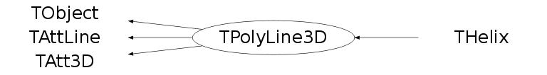

class TPolyLine3D: public TObject, public TAttLine, public TAtt3D
PolyLine3D is a 3-dimensional polyline. It has 4 different constructors. First one, without any parameters TPolyLine3D(), we call 'default constructor' and it's used in a case that just an initialisation is needed (i.e. pointer declaration). Example: TPolyLine3D *pl1 = new TPolyLine3D; Second one is 'normal constructor' with, usually, one parameter n (number of points), and it just allocates a space for the points. Example: TPolyLine3D pl1(150); Third one allocates a space for the points, and also makes initialisation from the given array. Example: TPolyLine3D pl1(150, pointerToAnArray); Fourth one is, almost, similar to the constructor above, except initialisation is provided with three independent arrays (array of x coordinates, y coordinates and z coordinates). Example: TPolyLine3D pl1(150, xArray, yArray, zArray); Example: void pl3() { TCanvas *c1 = new TCanvas("c1"); TView *view = TView::CreateView(1); view->SetRange(0,0,0,2,2,2); const Int_t n = 100; TPolyLine3D *l = new TPolyLine3D(n); for (Int_t i=0;i<n;i++) { Double_t x = 2*gRandom->Rndm(); Double_t y = 2*gRandom->Rndm(); Double_t z = 2*gRandom->Rndm(); l->SetPoint(i,x,y,z); } l->Draw(); }
Function Members (Methods)
public:
| TPolyLine3D() | |
| TPolyLine3D(const TPolyLine3D& polylin) | |
| TPolyLine3D(Int_t n, Option_t* option = "") | |
| TPolyLine3D(Int_t n, Float_t* p, Option_t* option = "") | |
| TPolyLine3D(Int_t n, Double_t* p, Option_t* option = "") | |
| TPolyLine3D(Int_t n, Float_t* x, Float_t* y, Float_t* z, Option_t* option = "") | |
| TPolyLine3D(Int_t n, Double_t* x, Double_t* y, Double_t* z, Option_t* option = "") | |
| virtual | ~TPolyLine3D() |
| void | TObject::AbstractMethod(const char* method) const |
| virtual void | TObject::AppendPad(Option_t* option = "") |
| virtual void | TObject::Browse(TBrowser* b) |
| static TClass* | Class() |
| virtual const char* | TObject::ClassName() const |
| virtual void | TObject::Clear(Option_t* = "") |
| virtual TObject* | TObject::Clone(const char* newname = "") const |
| virtual Int_t | TObject::Compare(const TObject* obj) const |
| virtual void | Copy(TObject& polyline) const |
| virtual void | TObject::Delete(Option_t* option = "")MENU |
| Int_t | TAttLine::DistancetoLine(Int_t px, Int_t py, Double_t xp1, Double_t yp1, Double_t xp2, Double_t yp2) |
| virtual Int_t | DistancetoPrimitive(Int_t px, Int_t py) |
| virtual void | Draw(Option_t* option = "") |
| virtual void | TObject::DrawClass() constMENU |
| virtual TObject* | TObject::DrawClone(Option_t* option = "") constMENU |
| static void | DrawOutlineCube(TList* outline, Double_t* rmin, Double_t* rmax) |
| virtual void | DrawPolyLine(Int_t n, Float_t* p, Option_t* option = "") |
| virtual void | TObject::Dump() constMENU |
| virtual void | TObject::Error(const char* method, const char* msgfmt) const |
| virtual void | TObject::Execute(const char* method, const char* params, Int_t* error = 0) |
| virtual void | TObject::Execute(TMethod* method, TObjArray* params, Int_t* error = 0) |
| virtual void | ExecuteEvent(Int_t event, Int_t px, Int_t py) |
| virtual void | TObject::Fatal(const char* method, const char* msgfmt) const |
| virtual TObject* | TObject::FindObject(const char* name) const |
| virtual TObject* | TObject::FindObject(const TObject* obj) const |
| virtual Option_t* | TObject::GetDrawOption() const |
| static Long_t | TObject::GetDtorOnly() |
| virtual const char* | TObject::GetIconName() const |
| Int_t | GetLastPoint() const |
| virtual Color_t | TAttLine::GetLineColor() const |
| virtual Style_t | TAttLine::GetLineStyle() const |
| virtual Width_t | TAttLine::GetLineWidth() const |
| Int_t | GetN() const |
| virtual const char* | TObject::GetName() const |
| virtual char* | TObject::GetObjectInfo(Int_t px, Int_t py) const |
| static Bool_t | TObject::GetObjectStat() |
| virtual Option_t* | GetOption() const |
| Float_t* | GetP() const |
| virtual const char* | TObject::GetTitle() const |
| virtual UInt_t | TObject::GetUniqueID() const |
| virtual Bool_t | TObject::HandleTimer(TTimer* timer) |
| virtual ULong_t | TObject::Hash() const |
| virtual void | TObject::Info(const char* method, const char* msgfmt) const |
| virtual Bool_t | TObject::InheritsFrom(const char* classname) const |
| virtual Bool_t | TObject::InheritsFrom(const TClass* cl) const |
| virtual void | TObject::Inspect() constMENU |
| void | TObject::InvertBit(UInt_t f) |
| virtual TClass* | IsA() const |
| virtual Bool_t | TObject::IsEqual(const TObject* obj) const |
| virtual Bool_t | TObject::IsFolder() const |
| Bool_t | TObject::IsOnHeap() const |
| virtual Bool_t | TObject::IsSortable() const |
| Bool_t | TObject::IsZombie() const |
| virtual void | ls(Option_t* option = "") const |
| void | TObject::MayNotUse(const char* method) const |
| virtual Int_t | Merge(TCollection* list) |
| virtual void | TAttLine::Modify() |
| virtual Bool_t | TObject::Notify() |
| void | TObject::Obsolete(const char* method, const char* asOfVers, const char* removedFromVers) const |
| static void | TObject::operator delete(void* ptr) |
| static void | TObject::operator delete(void* ptr, void* vp) |
| static void | TObject::operator delete[](void* ptr) |
| static void | TObject::operator delete[](void* ptr, void* vp) |
| void* | TObject::operator new(size_t sz) |
| void* | TObject::operator new(size_t sz, void* vp) |
| void* | TObject::operator new[](size_t sz) |
| void* | TObject::operator new[](size_t sz, void* vp) |
| TPolyLine3D& | operator=(const TPolyLine3D& polylin) |
| virtual void | Paint(Option_t* option = "") |
| virtual void | TObject::Pop() |
| virtual void | Print(Option_t* option = "") const |
| virtual Int_t | TObject::Read(const char* name) |
| virtual void | TObject::RecursiveRemove(TObject* obj) |
| virtual void | TAttLine::ResetAttLine(Option_t* option = "") |
| void | TObject::ResetBit(UInt_t f) |
| virtual void | TObject::SaveAs(const char* filename = "", Option_t* option = "") constMENU |
| virtual void | TAttLine::SaveLineAttributes(ostream& out, const char* name, Int_t coldef = 1, Int_t stydef = 1, Int_t widdef = 1) |
| virtual void | SavePrimitive(ostream& out, Option_t* option = "") |
| void | TObject::SetBit(UInt_t f) |
| void | TObject::SetBit(UInt_t f, Bool_t set) |
| virtual void | TObject::SetDrawOption(Option_t* option = "")MENU |
| static void | TObject::SetDtorOnly(void* obj) |
| virtual void | TAttLine::SetLineAttributes()MENU |
| virtual void | TAttLine::SetLineColor(Color_t lcolor) |
| virtual void | TAttLine::SetLineStyle(Style_t lstyle) |
| virtual void | TAttLine::SetLineWidth(Width_t lwidth) |
| virtual Int_t | SetNextPoint(Double_t x, Double_t y, Double_t z)MENU |
| static void | TObject::SetObjectStat(Bool_t stat) |
| virtual void | SetOption(Option_t* option = "") |
| virtual void | SetPoint(Int_t point, Double_t x, Double_t y, Double_t z)MENU |
| virtual void | SetPolyLine(Int_t n, Option_t* option = "") |
| virtual void | SetPolyLine(Int_t n, Float_t* p, Option_t* option = "") |
| virtual void | SetPolyLine(Int_t n, Double_t* p, Option_t* option = "") |
| virtual void | TObject::SetUniqueID(UInt_t uid) |
| virtual void | ShowMembers(TMemberInspector& insp) |
| virtual Int_t | Size() const |
| virtual void | TAtt3D::Sizeof3D() const |
| virtual void | Streamer(TBuffer& b) |
| void | StreamerNVirtual(TBuffer& b) |
| virtual void | TObject::SysError(const char* method, const char* msgfmt) const |
| Bool_t | TObject::TestBit(UInt_t f) const |
| Int_t | TObject::TestBits(UInt_t f) const |
| virtual void | TObject::UseCurrentStyle() |
| virtual void | TObject::Warning(const char* method, const char* msgfmt) const |
| virtual Int_t | TObject::Write(const char* name = 0, Int_t option = 0, Int_t bufsize = 0) |
| virtual Int_t | TObject::Write(const char* name = 0, Int_t option = 0, Int_t bufsize = 0) const |
protected:
| virtual void | TObject::DoError(int level, const char* location, const char* fmt, va_list va) const |
| void | TObject::MakeZombie() |
Data Members
public:
| enum TObject::EStatusBits { | kCanDelete | |
| kMustCleanup | ||
| kObjInCanvas | ||
| kIsReferenced | ||
| kHasUUID | ||
| kCannotPick | ||
| kNoContextMenu | ||
| kInvalidObject | ||
| }; | ||
| enum TObject::[unnamed] { | kIsOnHeap | |
| kNotDeleted | ||
| kZombie | ||
| kBitMask | ||
| kSingleKey | ||
| kOverwrite | ||
| kWriteDelete | ||
| }; |
protected:
| Int_t | fLastPoint | The index of the last filled point |
| Color_t | TAttLine::fLineColor | line color |
| Style_t | TAttLine::fLineStyle | line style |
| Width_t | TAttLine::fLineWidth | line width |
| Int_t | fN | Number of points |
| TString | fOption | options |
| Float_t* | fP | [3*fN] Array of 3-D coordinates (x,y,z) |
Class Charts
{kind=link}
{kind=link}
{kind=link}
{kind=link}

Function documentation
TPolyLine3D(Int_t n, Option_t* option = "")
3-D polyline normal constructor with initialization to 0. If n < 0 the default size (2 points) is set.
TPolyLine3D(Int_t n, Float_t* p, Option_t* option = "")
3-D polyline normal constructor. Polyline is intialized with p. If n < 0 the default size (2 points) is set.
TPolyLine3D(Int_t n, Double_t* p, Option_t* option = "")
3-D polyline normal constructor. Polyline is initialized with p (cast to float). If n < 0 the default size (2 points) is set.
TPolyLine3D(Int_t n, Float_t* x, Float_t* y, Float_t* z, Option_t* option = "")
3-D polyline normal constructor. Polyline is initialized withe the x, y ,z arrays. If n < 0 the default size (2 points) is set.
TPolyLine3D(Int_t n, Double_t* x, Double_t* y, Double_t* z, Option_t* option = "")
3-D polyline normal constructor. Polyline is initialized withe the x, y, z arrays (which are cast to float). If n < 0 the default size (2 points) is set.
Int_t DistancetoPrimitive(Int_t px, Int_t py)
Compute distance from point px,py to a 3-D polyline. Compute the closest distance of approach from point px,py to each segment of the polyline. Returns when the distance found is below DistanceMaximum. The distance is computed in pixels units.
void DrawOutlineCube(TList* outline, Double_t* rmin, Double_t* rmax)
Draw cube outline with 3d polylines. xmin = fRmin[0] xmax = fRmax[0] ymin = fRmin[1] ymax = fRmax[1] zmin = fRmin[2] zmax = fRmax[2] (xmin,ymax,zmax) +---------+ (xmax,ymax,zmax) / /| / / | / / | (xmin,ymin,zmax) +---------+ | | | + (xmax,ymax,zmin) | | +---------+ (xmin,ymin,zmin) (xmax,ymin,zmin)
void DrawPolyLine(Int_t n, Float_t* p, Option_t* option = "")
Draw 3-D polyline with new coordinates. Creates a new polyline which will be adopted by the pad in which it is drawn. Does not change the original polyline (should be static method).
void SavePrimitive(ostream& out, Option_t* option = "")
Save primitive as a C++ statement(s) on output stream.
Int_t SetNextPoint(Double_t x, Double_t y, Double_t z)
Set point following LastPoint to x, y, z. Returns index of the point (new last point).
void SetPoint(Int_t point, Double_t x, Double_t y, Double_t z)
Set point n to x, y, z. If n is more then the current TPolyLine3D size (n > fN) then the polyline will be resized to contain at least n points.
void SetPolyLine(Int_t n, Option_t* option = "")
Re-initialize polyline with n points (0,0,0). if n <= 0 the current array of points is deleted.
void SetPolyLine(Int_t n, Float_t* p, Option_t* option = "")
Re-initialize polyline with n points from p. If p=0 initialize with 0. if n <= 0 the current array of points is deleted.
void SetPolyLine(Int_t n, Double_t* p, Option_t* option = "")
Re-initialize polyline with n points from p. If p=0 initialize with 0. if n <= 0 the current array of points is deleted.